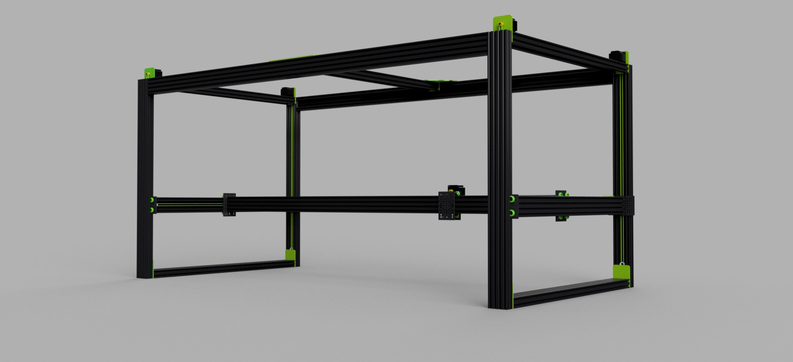
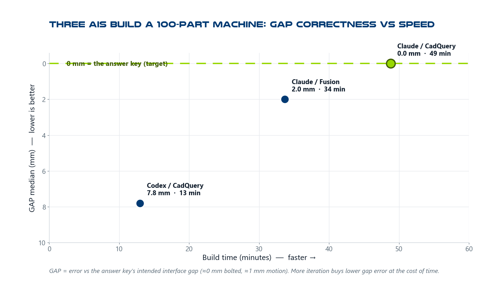

Can AI assemble
real machines?
We give different AIs the same parts and the same goal, then grade what each one builds with one automatic checker. It's the Mechanical Assembly Readiness Benchmark — and it runs on CADCLAW, our open-source verification engine.
Tool-independent · automated · mapped to TRL / MRL / IRL · the engine is open source (MIT)

The goal above is the only picture each AI received — plus a box of ~100 parts. No build steps. We measured whether they could figure out the rest.
The first results
Three AI workflows — Claude (Fusion and CadQuery) and OpenAI Codex (CadQuery) — each placed all ~100 parts with zero human help. None is buildable yet: in every run some parts overlapped and the corner posts faced the wrong way. A clean build scores 100; these first tries scored 12–15.
Even with low scores, the underlying result is real. From one picture and a box of parts, with no build sequence, each model produced a coherent two-metre machine. One finished in 13 minutes with no retries. The scores are low because the bar is a buildable machine, not one that merely looks right. Placing the parts is now the easy part; fitting them together without overlaps is the hard part, and that is what these scores measure.

How good vs. how fast. OpenAI Codex one-shot it in 13 minutes; the slower, more iterative run was the cleanest. A clean build = 100 — the whole field is near the floor today.
What MARB measures
A capability ladder, L0–L7, from "place one part correctly" up to "design, build, and certify a machine autonomously." Today's frontier sits at L1 — assemble the kit. The benchmark is graded on what the exported geometry proves, so any tool — Fusion, CadQuery, or an AI agent — is judged on equal footing, and scored against the readiness scales industry already uses.
Prior art exists for AI generating CAD; MARB is, to our knowledge, the first tool-independent benchmark for whether a whole assembled machine is correct and buildable.
The engine: CADCLAW open source
MARB runs on CADCLAW — an open-source check suite for STEP assemblies. It's the same engine you can pip install and run in your own CI: a chain of automated gates that pass only when every configured check passes. Like pytest for mechanical design — in spirit.
Inventory
Missing or extra parts, by bounding-box signature, against expected counts.
Interference
Solid-solid overlaps via BRep boolean intersection — not just bbox.
Adjacency
Parts that should be near each other but aren't — the motor 600 mm from its mount.
Dimensional
Wrong thickness, swapped box() args, impossible dimensions.
Floating
Non-exempt parts isolated from the structural frame beyond a max gap.
Kinematics
Beam deflection, motor torque budgets, belt tension, racking.
Tolerance
Worst-case, RSS, Monte Carlo stacking with Cpk and variance decomposition.
BOM audit
BOM JSON ↔ CAD: qty, mfg_type, required/forbidden terms, count drift. Private fields never echoed.
cadclaw doctor verifies your environment · cadclaw publish-audit stops private BOMs being committed · cadclaw claim-audit flags overclaims. The same discipline keeps the benchmark honest — it won't assert a result it hasn't earned. An MCP server exposes the checks (and only the checks) to AI assistants.
Quick start
pip install cadclaw cadclaw doctor # verify the environment cadclaw harness --rules cadclaw.yaml # run configured checks cadclaw bom-audit --rules cadclaw.yaml # or a single gate
Exit codes: 0 pass · 1 fail · 2 warn-only · 3 internal error. No commercial CAD software required for CADCLAW's own checks. Full how-it-works write-up: CI for mechanical design →
What CADCLAW does NOT prove
CADCLAW checks geometry, BOM JSON, and README text against rules you write. It does not prove:
- That the native CAD model has no hidden or suppressed parts — it reads the STEP export, which can silently drop invisible parts.
- That the physical build matches the CAD.
- That a vendor part is in stock or the price you assumed.
- That a printed part is strong enough for production — the kinematics gates do bare-beam math, not fatigue or creep.
- That an AI-generated change is correct — passing the gates means "passed the gates we have," no more.
Each report ships a confidence budget per gate: checked, not_checked, assumptions. Read it. (The benchmark's grades are geometric; they are not a substitute for physical testing.)
Origin
CADCLAW was built alongside the M3-CRETE open-source concrete 3D printer — the large, part-dense machine that is also MARB's first reference target. Across that project the harness:
- Caught 53 solid-solid interferences in a single run
- Reduced STEP file size from 70 MB to 13 MB by finding geometry bloat
- Validated 150+ assembly changes across 15 sessions without visual inspection
Developed by Sunnyday Technologies.
Citation
If you use CADCLAW or MARB in published research or derivative work, please cite:
Sonnentag, N. (2026). CADCLAW: Automated validation framework for STEP-based CAD assemblies. Sunnyday Technologies. https://github.com/sunnyday-technologies/CADCLAW DOI: 10.5281/zenodo.19647391
A CITATION.cff file is included for automated citation tooling.